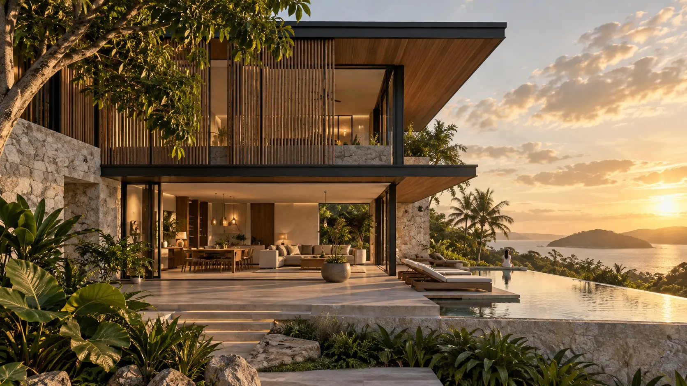

Architectural Design
Site-responsive concepts developed around your needs, lifestyle, and long-term vision.

Architecture · Design · Build
Architectural design and building services in Tagbilaran City, grounded in place, climate, and the people who call it home.
Explore our portfolioConcept visualization
We design buildings that feel inevitable—responsive to their setting, purposeful in every detail, and made to endure.
Based in Tagbilaran City, Digal Architect & Builders brings architectural vision and practical building knowledge together under one roof.
Our public work reflects an interest in tropical living, natural materials, community spaces, and architecture that belongs to its environment.
A coordinated approach that keeps design intent and construction reality aligned.
Site-responsive concepts developed around your needs, lifestyle, and long-term vision.
Clear plans, considered materials, and carefully resolved details that prepare an idea for construction.
Practical coordination from drawings to site, with attention to quality and the original design intent.
Selected projects migrated from the studio’s public portfolio archive, spanning hospitality, residential, commercial, cultural and community work.


Project information was migrated from the studio’s public portfolio and may be refined as additional details are confirmed.
Publicly listed recognition of the studio’s architectural and sustainable-design work.

Recognized for pioneering work in regenerative bamboo architecture and sustainable design.

A state recognition for architecture presented through the National Commission for Culture and the Arts.

International recognition celebrating contributions to architecture and the building industry.

Recognition for visionary plant-based regenerative bamboo innovation and sustainable architecture.

International recognition for architectural design excellence and innovation.

Recognition for a commercial project combining function, material expression and architectural character.
We begin with your goals, site, priorities, and the way you want the space to feel.
Ideas become a clear architectural direction shaped by context and possibility.
Plans, materials, and details are developed into a coherent, buildable design.
The vision is carried through with practical coordination and attention on site.
Begin a conversation
Visit our studio in Tagbilaran City or connect with us on Facebook to discuss your project.